Welcome!
This training covers the general principles of visualization and graphic design, and techniques of tailored visualization. More specifically, the objectives of the training are:
- Make an overview of basic data visualization principles, including shapes, sizes, colours, and fonts.
- Discuss how to choose the right visualization for your data, what you want to communicate, and who you want to communicate to.
- Tools and principles to tailor visualizations, particularly in making interpretable, interactive, and honest visualizations.
Training material
Click on “Show code” to learn how to do each plot!
Interactive examples
Streamgraph
Show code
# Script to make a streamgraph of the top 10 most popular dog breeds in
# New York City from 1999 to 2015
# load libraries
library(lubridate) # dealing with dates
library(dplyr) # data manipulation
library(streamgraph) #devtools::install_github("hrbrmstr/streamgraph")
library(htmlwidgets) # to save the widget!
# load the dataset
# more information about this dataset can be found here:
# https://www.kaggle.com/smithaachar/nyc-dog-licensing-clean
nyc_dogs <- read.csv("data/nyc_dogs.csv")
# convert birth year to date format (and keep only the year)
nyc_dogs$AnimalBirthYear <- mdy_hms(nyc_dogs$AnimalBirthMonth) %>% year()
# identify 10 most common dogs
topdogs <- nyc_dogs %>% count(BreedName)
topdogs <- topdogs[order(topdogs$n, decreasing = TRUE),]
# keep 10 most common breeds (and remove last year of data which is incomplete)
df <- filter(nyc_dogs, BreedName %in% topdogs$BreedName[2:11] & AnimalBirthYear < 2016) %>%
group_by(AnimalBirthYear) %>%
count(BreedName) %>% ungroup()
# get some nice colours from viridis (magma)
cols <- viridis::viridis_pal(option = "magma")(length(unique(df$BreedName)))
# make streamgraph!
pp <- streamgraph(df,
key = BreedName, value = n, date = AnimalBirthYear,
height="600px", width="1000px") %>%
sg_legend(show=TRUE, label="names: ") %>%
sg_fill_manual(values = cols)
# saveWidget(pp, file=paste0(getwd(), "/figures/dogs_streamgraph.html"))
# plot
ppInteractive plot
Show code
# Script to generate plots to demonstrate how combinations of information dimensions
# can become overwhelming and difficult to interpret.
# set-up & data manipulation ---------------------------------------------------
# load packages
library(ggplot2) # for plots, built layer by layer
library(dplyr) # for data manipulation
library(magrittr) # for piping
library(plotly) # interactive plots
# set ggplot theme
theme_set(theme_classic() +
theme(axis.title = element_text(size = 11, face = "bold"),
axis.text = element_text(size = 11),
plot.title = element_text(size = 13, face = "bold"),
legend.title = element_text(size = 11, face = "bold"),
legend.text = element_text(size = 10)))
# import data
# more info on this dataset: https://github.com/rfordatascience/tidytuesday/blob/master/data/2020/2020-07-28/readme.md
penguins <- readr::read_csv('https://raw.githubusercontent.com/rfordatascience/tidytuesday/master/data/2020/2020-07-28/penguins.csv')
# get some nice colours from viridis (magma)
sp_cols <- viridis::viridis_pal(option = "magma")(5)[2:4]
#### Day 1 ####
# 1. Similarity
ggplot(penguins) +
geom_point(aes(y = bill_length_mm, x = bill_depth_mm, col = species), size = 2.5) +
labs(x = "Bill depth (mm)", y = "Bill length (mm)", col = "Species") + # labels
scale_color_manual(values = sp_cols) # sets the colour scale we created above 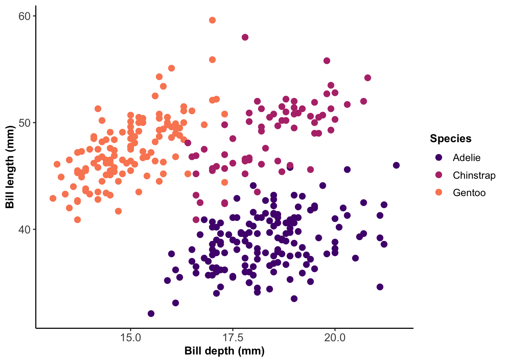
Show code
ggsave("figures/penguins_similarity.png", width = 6, height = 3, units = "in")
# 2. Proximity
df <- penguins %>% group_by(sex, species) %>%
summarise(mean_mass = mean(body_mass_g, na.rm = TRUE)) %>% na.omit()
ggplot(df) +
geom_bar(aes(y = mean_mass, x = species, fill = sex),
position = "dodge", stat = "identity") +
labs(x = "Species", y = "Mean body mass (g)", col = "Sex") + # labels
scale_fill_manual(values = sp_cols) # sets the colour scale we created above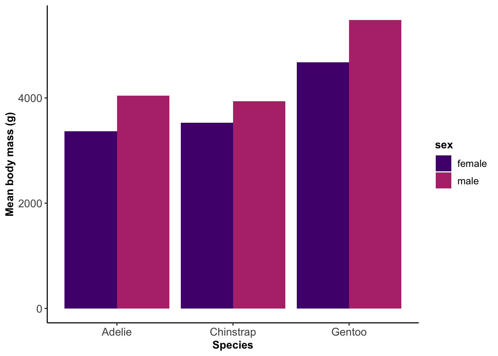
Show code
ggsave("figures/penguins_proximity.png", width = 6, height = 3, units = "in")
# 3. Enclosure (Ellipses over a fake PCA)
ggplot(data = penguins,
aes(y = bill_length_mm, x = bill_depth_mm)) +
geom_point(size = 2.1, col = "grey30") +
stat_ellipse(aes(col = species), lwd = .7) +
labs(x = "PCA1", y = "PCA2", col = "Species") + # labels
scale_color_manual(values = sp_cols) + # sets the colour scale we created above
theme(axis.text = element_blank(), axis.ticks = element_blank())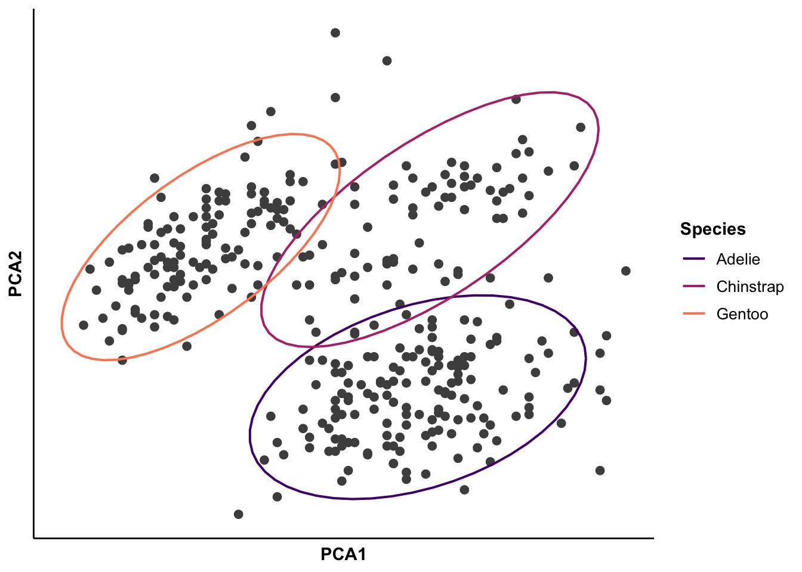
Show code
ggsave("figures/penguins_enclosure.png", width = 6, height = 3, units = "in")
# 4. Mismatched combination of principles
temp_palette <- rev(c(sp_cols, "#1f78b4", "#33a02c"))
ggplot(data = penguins,
aes(y = bill_length_mm, x = bill_depth_mm)) +
geom_point(aes(col = sex), size = 2.1) +
stat_ellipse(aes(col = species), lwd = .7) +
labs(x = "Bill depth (mm)", y = "Bill length (mm)", col = "?") + # labels
scale_color_manual(values = temp_palette) # sets the colour scale we created above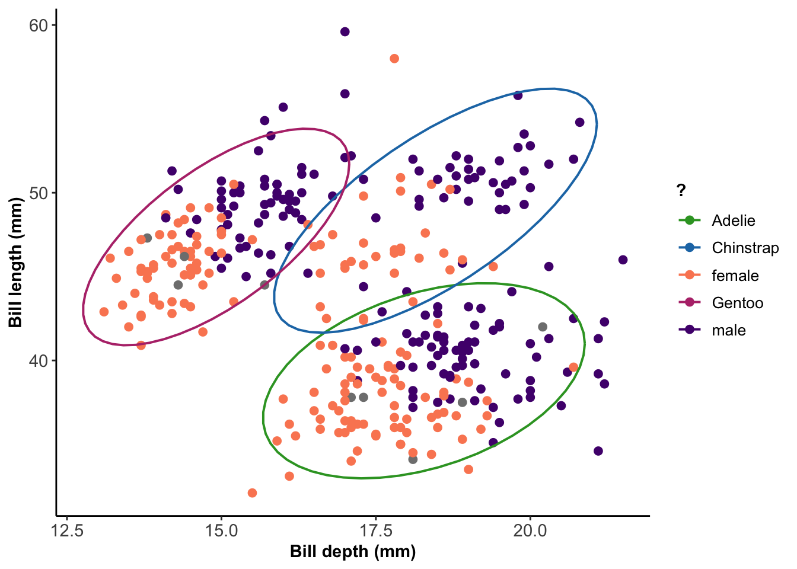
Show code
ggsave("figures/penguins_mismatchedgestalt.png", width = 6, height = 3, units = "in")
#### Day 2 ####
# 1. Ineffective combinations: Luminance & shading -----------------------------
# create the plot
ggplot(penguins) +
geom_point(aes(y = bill_length_mm, x = bill_depth_mm,
col = species, # hue
alpha = log(body_mass_g)), # luminance
size = 2.5) +
labs(x = "Bill depth (mm)", y = "Bill length (mm)",
col = "Species", alpha = "Body mass (g)") +
scale_color_manual(values = sp_cols)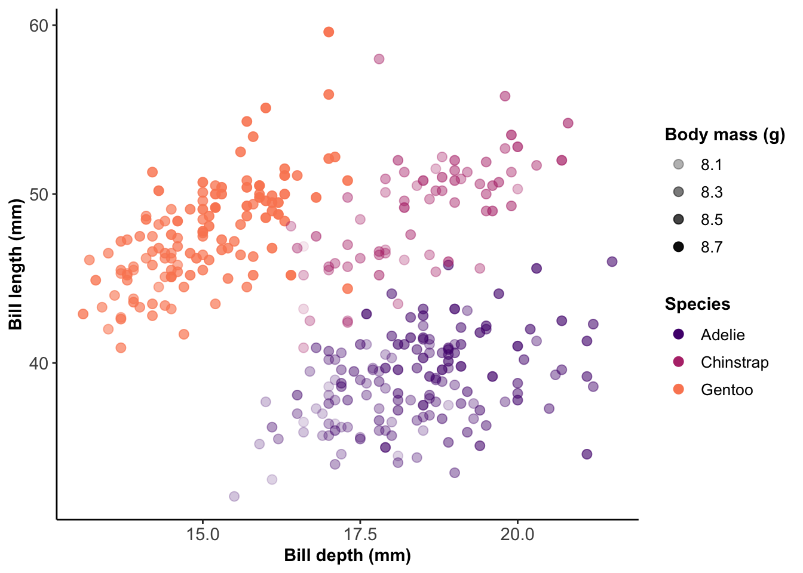
Show code
ggsave("figures/penguins_incompatible1.png", width = 6, height = 3, units = "in")
# 2. Ineffective combinations: Sizes and shapes --------------------------------
ggplot(penguins) +
geom_point(aes(y = bill_length_mm, x = bill_depth_mm,
shape = species, # shape
size = log(body_mass_g)), alpha = .7) + # size
scale_size(range = c(.1, 5)) + # make sure the sizes are scaled by area and not by radius
labs(x = "Bill depth (mm)", y = "Bill length (mm)",
shape = "Species", size = "Body mass (g)") 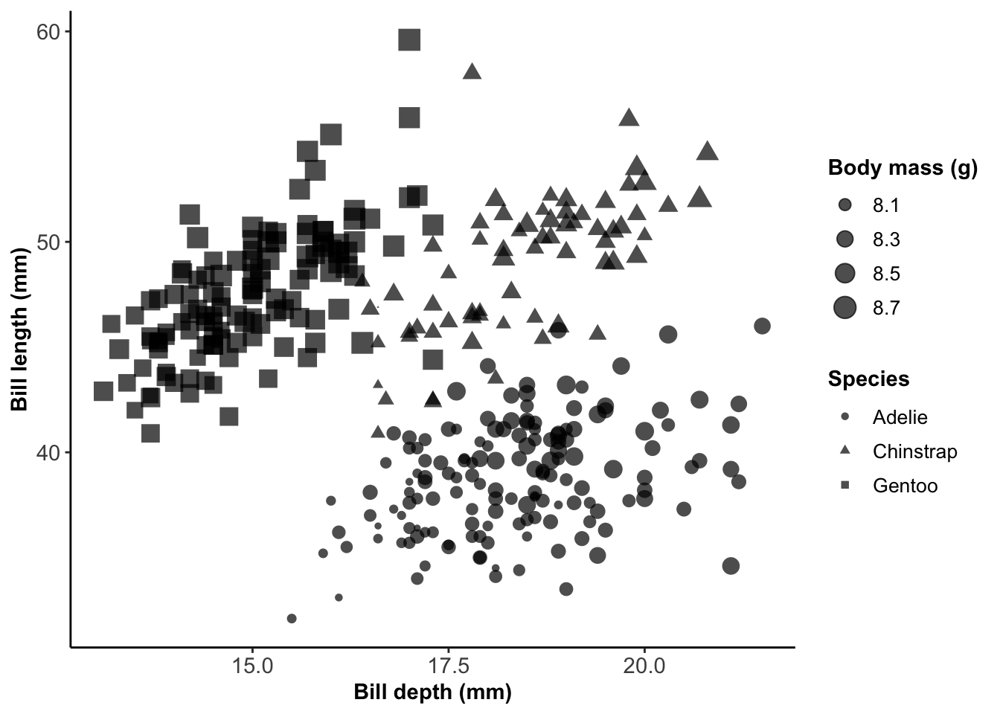
Show code
ggsave("figures/penguins_incompatible2.png", width = 6, height = 3, units = "in")
# 3. Cognitive overload --------------------------------------------------------
# get some nice colours from viridis (magma)
sex_cols <- viridis::viridis_pal(option = "magma")(8)[c(3,6)]
ggplot(na.omit(penguins)) +
geom_point(aes(y = bill_length_mm, # dimension 1: position along y scale
x = bill_depth_mm, # dimension 2: position along x scale
shape = species, # dimension 3: shape
size = log(body_mass_g), # dimension 4: size
col = sex), # dimension 5: hue
alpha = .7) + # size
scale_size(range = c(.1, 5)) + # make sure the sizes are scaled by area and not by radius
labs(x = "Bill depth (mm)", y = "Bill length (mm)",
shape = "Species", size = "Body mass (g)", col = "Sex") +
scale_color_manual(values = sex_cols)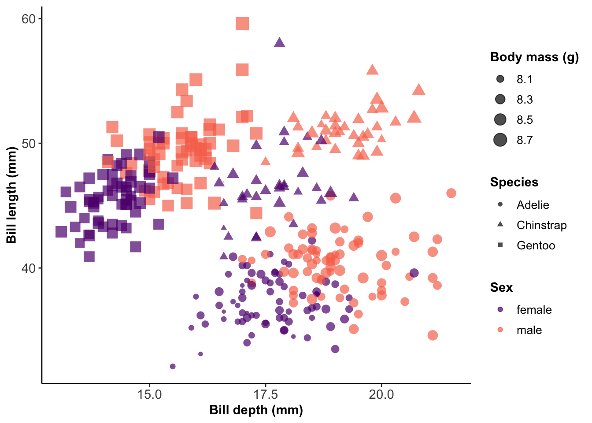
Show code
ggsave("figures/penguins_5dimensions.png", width = 7, height = 4, units = "in")
# 4. Panels -------------------------------------------------------------------
ggplot(na.omit(penguins)) +
geom_point(aes(y = bill_length_mm, # dimension 1: position along y scale
x = bill_depth_mm, # dimension 2: position along x scale
col = log(body_mass_g)), # dimension 3: hue
alpha = .7, size = 2) +
facet_wrap(~ species) + # dimension 4: species!
# this will create a separate panel for each species
# note: this also automatically uses the same axes for all panels! If you want
# axes to vary between panels, use the argument scales = "free"
labs(x = "Bill depth (mm)", y = "Bill length (mm)", col = "Body mass (g)") +
scale_color_viridis_c(option = "magma", end = .9, direction = -1) +
theme_linedraw() + theme(panel.grid = element_blank()) # making the panels prettier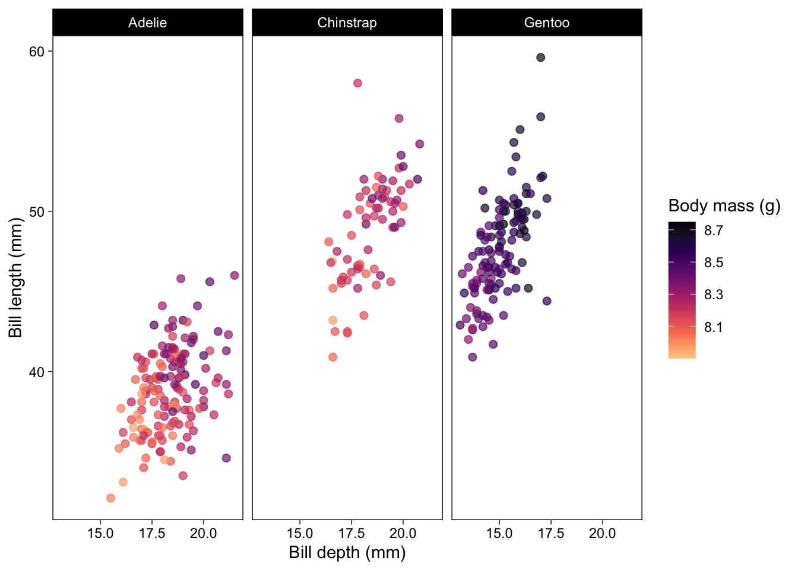
Show code
ggsave("figures/penguins_dimensions_facets.png", width = 7, height = 4, units = "in")
# 5. Interactive ---------------------------------------------------------------
p <- na.omit(penguins) %>%
ggplot(aes(y = bill_length_mm,
x = bill_depth_mm,
col = log(body_mass_g))) +
geom_point(size = 2, alpha = .7) +
facet_wrap(~ species) +
labs(x = "Bill depth (mm)", y = "Bill length (mm)", col = "Body mass (g)") +
scale_color_viridis_c(option = "magma", end = .9, direction = -1) +
theme_linedraw() + theme(panel.grid = element_blank()) # making the panels prettier
p <- ggplotly(p)
#setwd("figures")
htmlwidgets::saveWidget(as_widget(p), "figures/penguins_interactive.html")
pExample figures
Show code
# Script to make animated plot of volcano eruptions over time
# Load libraries:
library(dplyr) # data manipulation
library(ggplot2) # plotting
library(gganimate) # animation
library(gifski) # creating gifs
# set ggplot theme
theme_set(theme_classic() +
theme(axis.title = element_text(size = 11, face = "bold"),
axis.text = element_text(size = 11),
plot.title = element_text(size = 13, face = "bold"),
legend.title = element_text(size = 11, face = "bold"),
legend.text = element_text(size = 10)))
# function to floor a year to the decade
floor_decade = function(value){return(value - value %% 10)}
# read data
eruptions <- readr::read_csv('https://raw.githubusercontent.com/rfordatascience/tidytuesday/master/data/2020/2020-05-12/eruptions.csv')
# select top 5 most frequently exploding volcanoes
temp <- group_by(eruptions, volcano_name) %>% tally()
temp <- temp[order(temp$n, decreasing = TRUE),]
# make a time series dataset (number of eruptions per year)
eruptions$start_decade = floor_decade(eruptions$start_year)
# filter dataset to subset we want to visualize
df <- eruptions %>%
filter(between(start_decade, 1900, 2019)) %>%
filter(volcano_name %in% temp$volcano_name[1:5]) %>%
group_by(start_decade) %>%
count(volcano_name) %>% ungroup()
# plot!
p <- ggplot(df, aes(x = start_decade, y = n, fill = volcano_name)) +
geom_area() +
geom_vline(aes(xintercept = start_decade)) + # line that follows the current decade
scale_fill_viridis_d(option = "magma", end = .8) +
labs(x = "", y = "Number of eruptions", fill = "Volcano",
title = 'Eruptions of the top 5 most frequently erupting volcanos worldwide') +
# gganimate part: reveals each decade
transition_reveal(start_decade)
animate(p, duration = 5, fps = 20, width = 800, height = 300, renderer = gifski_renderer())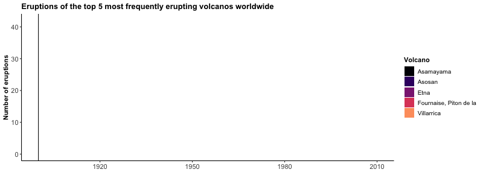
Show code
#anim_save("figures/volcano_eruptions.gif")Show code
# Script to generate plots with various ways of representing uncertainty, based
# Coffee & Code dataset from https://www.kaggle.com/devready/coffee-and-code/data
# set-up & data manipulation ---------------------------------------------------
# load packages
library(ggplot2) # for plots, built layer by layer
library(dplyr) # for data manipulation
library(magrittr) # for piping
library(ggridges) # for density ridge plots
library(patchwork) # great package for "patching" plots together!
# set ggplot theme
theme_set(theme_classic() +
theme(axis.title = element_text(size = 11, face = "bold"),
axis.text = element_text(size = 11),
plot.title = element_text(size = 13, face = "bold"),
legend.title = element_text(size = 11, face = "bold"),
legend.text = element_text(size = 10)))
# import data
df <- read.csv("data/coffee_code.csv")
# set labels to be used in all plots
coffee_labels <- labs(title = "Does coffee help programmers code?",
x = "Coffee while coding",
y = "Time spent coding \n(hours/day)")
# the variable CodingWithoutCoffee is negative, which is harder to understand
# (i.e. "No" means they drink coffee...). So, let's transform it into a more
# intuitive variable!
df$CodingWithCoffee <- gsub("No", "Usually", df$CodingWithoutCoffee)
df$CodingWithCoffee <- gsub("Yes", "Rarely\n or never", df$CodingWithCoffee)
# convert to factor and set levels so they show up in a logical order
df$CodingWithCoffee <- factor(df$CodingWithCoffee,
levels = c("Rarely\n or never",
"Sometimes",
"Usually"))
# calculate summary statistics for the variable of choice
df_summary <- group_by(df, CodingWithCoffee) %>%
summarise(
# mean
mean_codinghours = mean(CodingHours),
# standard deviation
sd_codinghours = sd(CodingHours),
# standard error
se_codinghours = sd(CodingHours)/sqrt(length(CodingHours)))
# 1. Error bars (standard error) -----------------------------------------------
ggplot(df_summary) +
geom_errorbar(aes(x = CodingWithCoffee,
ymin = mean_codinghours - se_codinghours,
ymax = mean_codinghours + se_codinghours),
width = .2) +
geom_point(aes(x = CodingWithCoffee, y = mean_codinghours),
size = 3) +
coffee_labels + ylim(0,10)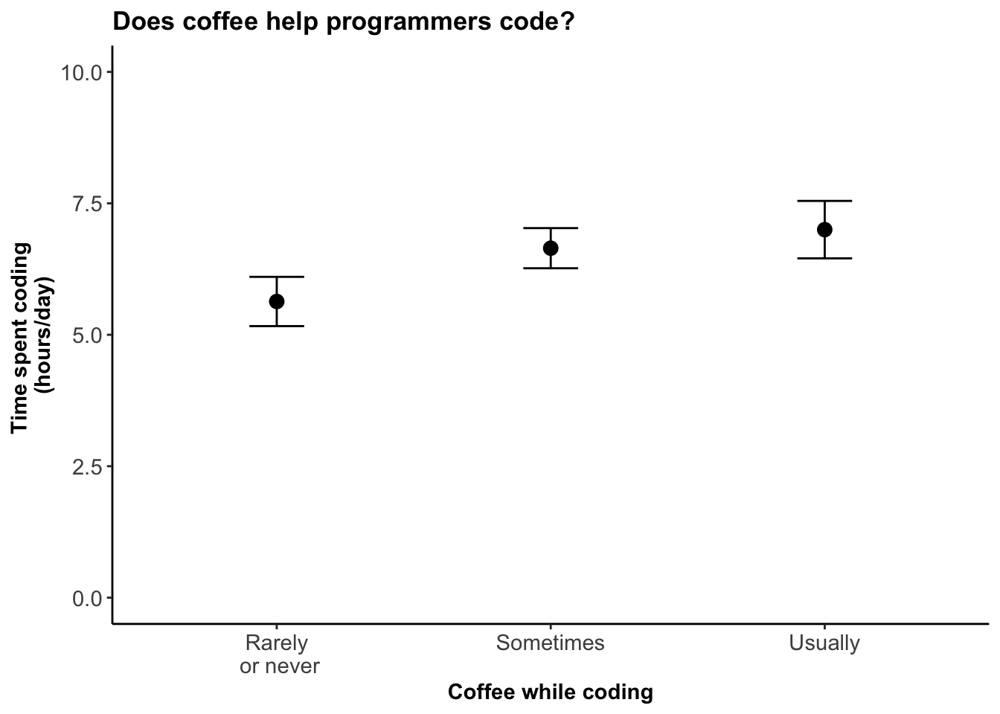
Show code
ggsave("figures/coffee_errorbars.png", width = 5, height = 3, units = "in")
# 2. Boxplot -------------------------------------------------------------------
ggplot(df) +
geom_boxplot(aes(x = CodingWithCoffee, y = CodingHours)) +
coffee_labels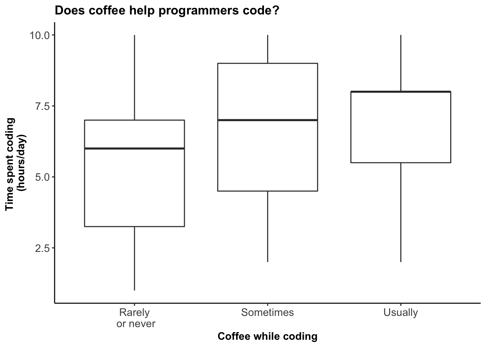
Show code
ggsave("figures/coffee_boxplot.png", width = 5, height = 3, units = "in")
# 3. Error bar demonstration ---------------------------------------------------
# get some nice colours from viridis (magma)
error_cols <- viridis::viridis_pal(option = "magma")(5)[2:4]
# set labels to be used in the palette
error_labels = c("standard deviation","95% confidence interval","standard error")
ggplot(df_summary) +
# show the raw data
geom_jitter(data = df, aes(x = CodingWithCoffee,
y = CodingHours),
alpha = .5, width = .05, col = "grey") +
# standard deviation
geom_errorbar(aes(x = CodingWithCoffee,
ymin = mean_codinghours - sd_codinghours,
ymax = mean_codinghours + sd_codinghours,
col = "SD"), width = .2, lwd = 1) +
# 95% confidence interval
geom_errorbar(aes(x = CodingWithCoffee,
ymin = mean_codinghours - 1.96*se_codinghours,
ymax = mean_codinghours + 1.96*se_codinghours,
col = "CI"), width = .2, lwd = 1) +
# standard error
geom_errorbar(aes(x = CodingWithCoffee,
ymin = mean_codinghours - se_codinghours,
ymax = mean_codinghours + se_codinghours,
col = "SE"), width = .2, lwd = 1) +
geom_point(aes(x = CodingWithCoffee, y = mean_codinghours),
size = 3) +
coffee_labels + ylim(c(0,11)) +
# manual palette/legend set-up!
scale_colour_manual(name = "Uncertainty metric",
values = c(SD = error_cols[1],
CI = error_cols[2],
SE = error_cols[3]),
labels = error_labels) +
theme(legend.position = "top")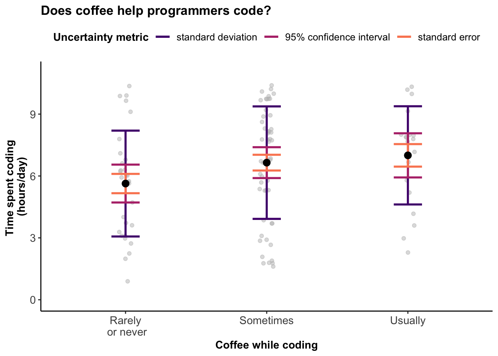
Show code
ggsave("figures/coffee_bars_demo.png", width = 7, height = 5, units = "in")
# 4. Jitter plot with violin ---------------------------------------------------
ggplot() +
geom_jitter(data = df, aes(x = CodingWithCoffee,
y = CodingHours),
alpha = .5, width = .05, col = "grey") +
geom_violin(data = df, aes(x = CodingWithCoffee,
y = CodingHours), alpha = 0) +
geom_linerange(data = df_summary,
aes(x = CodingWithCoffee,
ymin = mean_codinghours - se_codinghours,
ymax = mean_codinghours + se_codinghours)) +
geom_point(data = df_summary,
aes(x = CodingWithCoffee,
y = mean_codinghours), size = 3) +
coffee_labels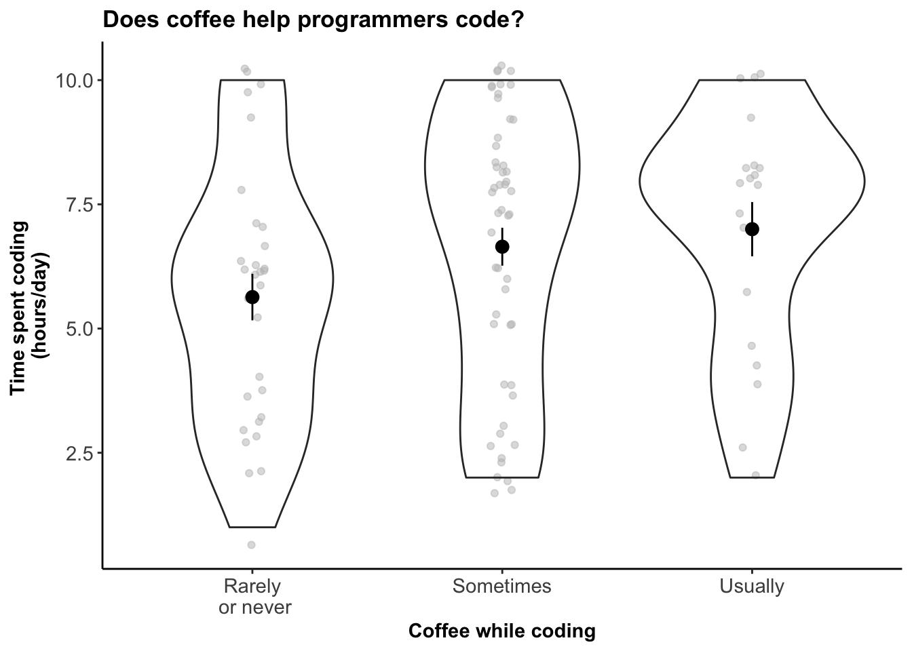
Show code
ggsave("figures/coffee_violin_jitter.png", width = 5, height = 3, units = "in")
# 5. Density ridge plot --------------------------------------------------------
ggplot(df) +
aes(y = CodingWithCoffee, x = CodingHours, fill = stat(x)) +
geom_density_ridges_gradient(scale = 1.9, size = .2, rel_min_height = 0.005) +
# colour palette (gradient according to CodingHours)
scale_fill_viridis_c(option = "magma", direction = -1) +
# remove legend - it's not necessary here!
theme(legend.position = "none") +
labs(title = coffee_labels$title,
x = coffee_labels$y,
y = "Coffee \nwhile coding") +
theme(axis.title.y = element_text(angle=0, hjust = 1, vjust = .9,
margin = margin(t = 0, r = -50, b = 0, l = 0)))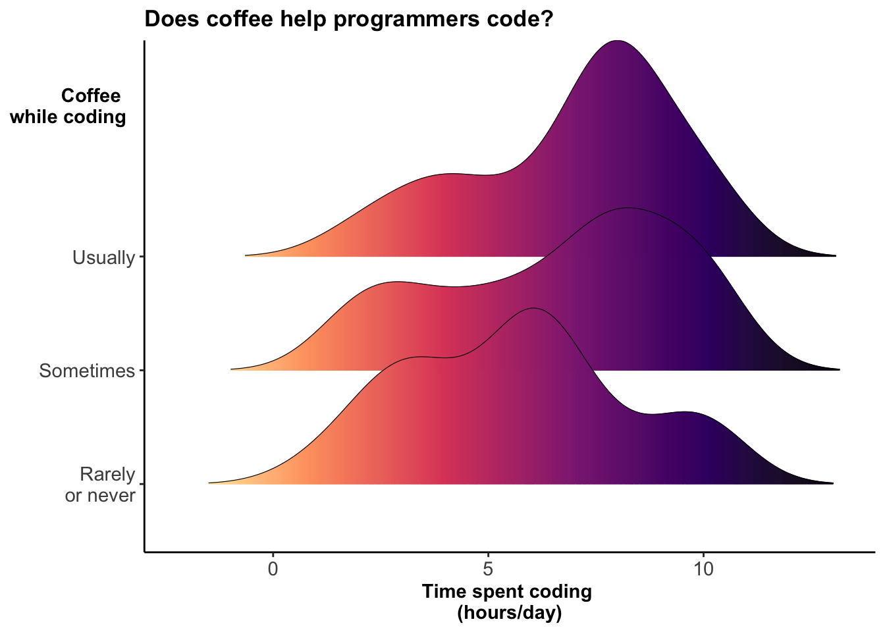
Show code
ggsave("figures/coffee_density_ridges.png", width = 5, height = 3, units = "in")
# 6. Jitter vs. Rug plot ------------------------------------------------------------------
jitterplot <- ggplot(df, aes(x = CoffeeCupsPerDay, y = CodingHours)) +
geom_jitter(alpha = .2) +
geom_smooth(fill = error_cols[1], col = "black", method = lm, lwd = .7) +
coffee_labels + ylim(c(0,11)) + labs(x = "Cups of coffee (per day)")
rugplot <- ggplot(df, aes(x = CoffeeCupsPerDay, y = CodingHours)) +
geom_smooth(fill = error_cols[1], col = "black", method = lm, lwd = .7) +
geom_rug(position="jitter", alpha = .7) + ylim(c(0,11)) +
coffee_labels + labs(x = "Cups of coffee (per day)")
# patch the two plots together
jitterplot + rugplot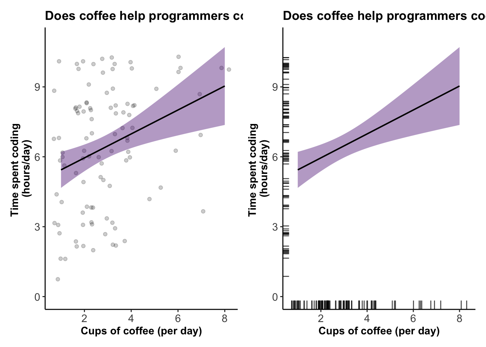
Show code
#ggsave("figures/coffee_jitter_vs_rugplot.png", width = 10, height = 4, units = "in")Show code
# Script to generate 95% confidence intervals of a generated random normal distribution
# as an example in Day 2: Visualizing uncertainty.
# load library
library(ggplot2)
library(magrittr)
library(dplyr)
# set ggplot theme
theme_set(theme_classic() +
theme(axis.title = element_text(size = 11, face = "bold"),
axis.text = element_text(size = 11),
plot.title = element_text(size = 13, face = "bold"),
legend.title = element_text(size = 11, face = "bold"),
legend.text = element_text(size = 10)))
# set random seed
set.seed(22)
# generate population (random normal distribution)
df <- data.frame("value" = rnorm(50, mean = 0, sd = 1))
# descriptive stats for each distribution
desc_stats = df %>%
summarise(mean_val = mean(value, na.rm = TRUE),
se_val = sqrt(var(value)/length(value)))
# build density plot!
p <- ggplot(data = df, aes(x = value, y = ..count..)) +
geom_density(alpha = .2, lwd = .3) +
xlim(c(min(df$value-1), max(df$value+1)))
# extract plotted values
base_p <- ggplot_build(p)$data[[1]]
# shade the 95% confidence interval
p +
geom_area(data = subset(base_p,
between(x,
left = (desc_stats$mean_val - 1.96*desc_stats$se_val),
right = (desc_stats$mean_val + 1.96*desc_stats$se_val))),
aes(x = x, y = y), fill = "cadetblue3", alpha = .6) +
# add vertical line to show population mean
geom_vline(aes(xintercept = 0), lty = 2) +
annotate("text", x = 0.9, y = 19, label = "True mean", fontface = "italic") +
# label axis!
labs(x = "Variable of interest", y = "") 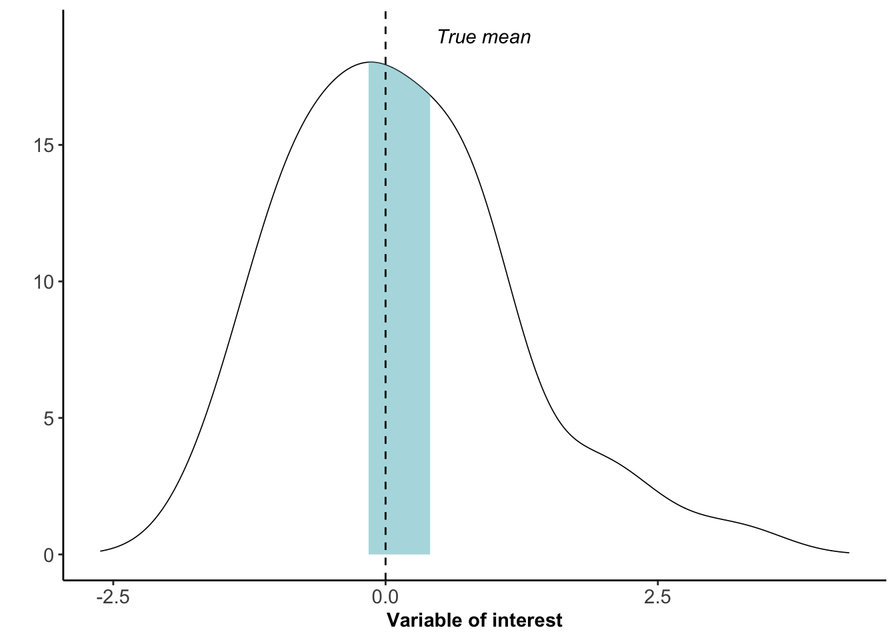
Show code
#ggsave("figures/confidenceinterval_example.png", width = 5, height = 3.5, units = "in")Annotated resource library
This is an annotated library of data visualization resources we used to build the BIOS² Data Visualization Training, as well as some bonus resources we didn’t have the time to include. Feel free to save this page as a reference for your data visualization adventures!
Books & articles
Fundamentals of Data Visualization
A primer on making informative and compelling figures. This is the website for the book “Fundamentals of Data Visualization” by Claus O. Wilke, published by O’Reilly Media, Inc.
Data Visualization: A practical introduction
An accessible primer on how to create effective graphics from data using R (mainly ggplot). This book provides a hands-on introduction to the principles and practice of data visualization, explaining what makes some graphs succeed while others fail, how to make high-quality figures from data using powerful and reproducible methods, and how to think about data visualization in an honest and effective way.
Data Science Design (Chapter 6: Visualizing Data)
Covers the principles that make standard plot designs work, show how they can be misleading if not properly used, and develop a sense of when graphs might be lying, and how to construct better ones.
Graphical Perception: Theory, Experimentation, and Application to the Development of Graphical Methods
Cleveland, William S., and Robert McGill. “Graphical Perception: Theory, Experimentation, and Application to the Development of Graphical Methods.” Journal of the American Statistical Association, vol. 79, no. 387, 1984, pp. 531–554. JSTOR, www.jstor.org/stable/2288400. Accessed 9 Oct. 2020.
Graphical Perception and Graphical Methods for Analyzing Scientific Data
Cleveland, William S., and Robert McGill. “Graphical perception and graphical methods for analyzing scientific data.” Science 229.4716 (1985): 828-833.
From Static to Interactive: Transforming Data Visualization to Improve Transparency
Weissgerber TL, Garovic VD, Savic M, Winham SJ, Milic NM (2016) designed an interactive line graph that demonstrates how dynamic alternatives to static graphics for small sample size studies allow for additional exploration of empirical datasets. This simple, free, web-based tool demonstrates the overall concept and may promote widespread use of interactive graphics.
Data visualization: ambiguity as a fellow traveler
Research that is being done about how to visualize uncertainty in data visualizations. Marx, V. Nat Methods 10, 613–615 (2013). https://doi.org/10.1038/nmeth.2530
Data visualization standards
Collection of guidance and resources to help create better data visualizations with less effort.
Design principles
Gestalt Principles for Data Visualization: Similarity, Proximity & Enclosure
Short visual guide to the Gestalt Principles.
Why scientists need to be better at data visualization
A great overview of principles that could improve how we visualize scientific data and results.
A collection of graphic pitfalls
A collection of short articles about common issues with data visualizations that can mislead or obscure your message.
Choosing a visualization
Data Viz Project
This is a great place to get inspiration and guidance about how to choose an appropriate visualization. There are many visualizations we are not used to seeing in ecology!
From data to Viz | Find the graphic you need
Interactive tool to choose an appropriate visualization type for your data.
Colour
What to consider when choosing colors for data visualization
A short, visual guide on things to keep in mind when using colour, such as when and how to use colour gradients, the colour grey, etc.
ColorBrewer: Color Advice for Maps
Tool to generate colour palettes for visualizations with colorblind-friendly options. You can also use these palettes in R using the RColorBrewer package, and the scale_*_brewer() (for discrete palettes) or scale_*_distiller() (for continuous palettes) functions in ggplot2.
Color.review
Tool to pick or verify colour palettes with high relative contrast between colours, to ensure your information is readable for everyone.
Coblis — Color Blindness Simulator
Tool to upload an image and view it as they would appear to a colorblind person, with the option to simulate several color-vision deficiencies.
500+ Named Colours with rgb and hex values
List of named colours along with their hex values.
CartoDB/CartoColor
CARTOColors are a set of custom color palettes built on top of well-known standards for color use on maps, with next generation enhancements for the web and CARTO basemaps. Choose from a selection of sequential, diverging, or qualitative schemes for your next CARTO powered visualization using their online module.
Tools
R
The R Graph Gallery
A collection of charts made with the R programming language. Hundreds of charts are displayed in several sections, always with their reproducible code available. The gallery makes a focus on the tidyverse and ggplot2.
Base R
Cheatsheet: Margins in base R
Edit your margins in base R to accommodate axis titles, legends, captions, etc.!
Customizing tick marks in base R
Seems like a simple thing, but it can be so frustrating! This is a great post about customizing tick marks with base plot in R.
Animations in R (for time series)
If you want to use animations but don’t want to use ggplot2, this demo might help you!
ggplot2
Cheatsheet: ggplot2
Cheatsheet for ggplot2 in R - anything you want to do is probably covered here!
Coding Club tutorial: Data Viz Part 1 - Beautiful and informative data visualization
Great tutorial demonstrating how to customize titles, subtitles, captions, labels, colour palettes, and themes in ggplot2.
Coding Club tutorial: Data Viz Part 2 - Customizing your figures
Great tutorial demonstrating how to customize titles, subtitles, captions, labels, colour palettes, and themes in ggplot2.
ggplot flipbook
A flipbook-style demonstration that builds and customizes plots line by line using ggplot in R.
gganimate: A Grammar of Animated Graphics
Package to create animated graphics in R (with ggplot2).
Python
The Python Graph Gallery
This website displays hundreds of charts, always providing the reproducible python code.
Python Tutorial: Intro to Matplotlib
Introduction to basic functionalities of the Python’s library Matplotlib covering basic plots, plot attributes, subplots and plotting the iris dataset.
The Art of Effective Visualization of Multi-dimensional Data
Covers both univariate (one-dimension) and multivariate (multi-dimensional) data visualization strategies using the Python machine learning ecosystem.
Julia
Julia Plots Gallery
Display of various plots with reproducible code in Julia.
Plots in Julia
Documentation for the Plots package in Julia, including demonstrations for animated plots, and links to tutorials.
Animations in Julia
How to start making animated plots in Julia.
Customization
Chart Studio
Web editor to create interactive plots with plotly. You can download the image as .html, or static images, without coding the figure yourself.
PhyloPic
Vector images of living organisms. This is great for ecologists who want to add silhouettes of their organisms onto their plots - search anything, and you will likely find it!
Add icons on your R plot
Add special icons to your plot as a great way to customize it, and save space with labels!
Inspiration (pretty things!)
Information is Beautiful
Collection of beautiful original visualizations about a variety of topics!
TidyTuesday
A weekly data project aimed at the R ecosystem, where people wrangle and visualize data in loads of creative ways. Browse what people have created (#TidyTuesday on Twitter is great too!), and the visualizations that have inspired each week’s theme.
Wind currents on Earth
Dynamic and interactive map of wind currents on Earth.
A Day in the Life of Americans
Dynamic visualisation of how Americans spend their time in an average day.
2019: The Year in Visual Stories and Graphics
Collection of the most popular visualizations by the New York Times in 2019.